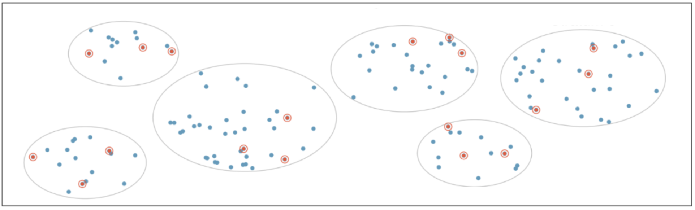

Midterm
IDS 702 - Fall 2024
| First name: | ________________ | Last name: | ________________ |
| Net ID: | ________________ |
I hereby state that I have not communicated with or gained information in any way from my classmates or unauthorized materials during this exam, and that all work is my own.
Signature: _________________________________
Any potential violation of Duke’s policy on academic integrity will be reported to the Office of Student Conduct & Community Standards. All work on this exam must be your own.
- You have 75 minutes to complete the exam.
- You are not allowed a cell phone (even if you intend to use it for checking the time), music device or headphones, notes, books, or other resources, or to communicate with anyone other than the professor or TAs during the exam.
- Write clearly.
The exam has 17 questions: 15 multiple choice questions and 2 short answer questions. Question 16 has parts a-d and question 17 has parts a-e. Before you begin, make sure your exam has all questions.
Formula Page
\(Pr(A|B) = \frac{Pr(A \cap B)}{Pr(B)}\)
\(Pr(A \cup B)=Pr(A)+Pr(B)-Pr(A \cap B)\)
Independence: \(Pr(A|B)=Pr(A)\), \(Pr(A \cap B)=Pr(A)Pr(B)\)
Bayes Theorem: \(Pr(B|A)=\frac{Pr(A|B)Pr(B)}{Pr(A)}\)
Total probability: \(Pr(A) = Pr(A|B)Pr(B)+Pr(A|B^c)Pr(B^c)\)
General formula for confidence interval: \(\bar{x} \pm z* \times \sigma / \sqrt{n}\)
Multiple Choice (3 points each)
Circle the letter to mark your answer choice.
Which sampling scheme is presented in the image below?

a. Simple random sampling
*b. Stratified sampling**
c. Cluster sampling
d. Multilevel sampling
- What is the distinction between standard deviation and standard error?
*a. Standard error is the standard deviation of the sampling distribution**
b. Standard deviation is the standard error of the sampling distribution
c. Standard error is the standard deviation of the population distribution
d. Standard deviation is the standard error of the population distribution
- Let \(X_1,X_2,...,X_n \stackrel {iid}{\sim} Exp(\lambda)\), where the PDF of the exponential distribution is given by \(f(x_i; \lambda)=\lambda e^{-\lambda x_i}\) for \(x_i>0\). The derivative of the log-likelihood, which is called the score function, is \(\frac{n}{\lambda}-\sum_{i=1}^{n} x_i\). What is the maximum likelihood estimator \(\hat{\lambda}\)?
a. \(\frac{\sum_{i=1}^{n}x_i}{\lambda}\)
*b.** \(\frac{n}{\sum_{i=1}^{n} x_i}\)
c. \(\frac{\sum_{i=1}^{n} x_i}{n}\)
d. The MLE cannot be calculated because \(x_i\) cannot be negative.
- The dataset
mlbhas the 2010 salary information (in $1000s) for 828 Major League Baseball players. Based on the histogram of themlbsalaries, can you characterize the distribution of the sample mean of MLB salaries? Assume that individual salaries are independent.
No, we would need to know the population distribution of the sample mean to characterize the distribution of the sample mean
Yes, the sample mean would have a right-skewed distribution
Yes, the sample mean would have a normal distribution
No, we would need to know the population distribution of MLB salaries to characterize the distribution of the sample mean
- A factory has two machines, A and B. Machine A produces 60% of the items, while Machine B produces 40%. The probability that an item produced by Machine A is defective is 2%, and the probability that an item produced by Machine B is defective is 3%. If a randomly selected item is found to be defective, what is the probability that it was produced by Machine A?
a. \(\frac{(0.6)(0.4)}{(0.02)(0.03)}\)
b. \(\frac{(0.6)(0.4)}{(0.02)(0.03)+(0.6)(0.4)}\)
*c.** \(\frac{(0.02)(0.6)}{(0.02)(0.6)+(0.03)(0.4)}\)
d. \(\frac{(0.02)}{(0.4)}\)
- Which of the following is true?
a. Independent events are mutually exclusive
b. If two events are mutually exclusive, then \(P(A\cap B)=P(A)P(B)\)
c. If two events are independent, then \(P(A\cap B)=0\)
*d. If two events are mutually exclusive, then** \(P(A \cap B)=0\)
- In which of the following cases would bootstrapping be most useful?
You collect data on 250 workers’ salaries across two companies and you want to compare median salary for the two companies.
You collect data on 2500 workers’ salaries across two companies and you want to compare mean salary for the two companies.
You collect data on 250 workers’ salaries in 2024 and compare the mean salary to the same workers’ mean salaries in 2020.
You collect data on 2500 workers’ salaries across five companies and you want to compare mean salary for the five companies.
- You perform an experiment to test the effect of a protein supplement on workout performance. You measure 100 runners’ mile times once without using the protein supplement, and then again one week later after using the protein supplement for seven days. You want to compare the mean mile time with and without the supplement. Is a two-sample t-test appropriate in this case?
Yes, because the runners between and within groups are likely independent and the sample size is sufficiently large.
No, because the runners between the groups are not independent.
No, because the runners within the groups are not independent.
No, because we do not have evidence that the mile times are normally distributed.
- Which of the following does NOT affect the calculation of a p-value?
a. Null hypothesis
b. Alternative hypothesis
c. Observed statistic
*d. Significance level** \(\alpha\)
- What is the difference between \(\beta\) and \(\hat{\beta}\)?
\(\beta\) is an estimate that describes the population, while \(\hat{\beta}\) is an unknown quantity using the sample
\(\beta\) is an unknown quantity that describes the sample, while \(\hat{\beta}\) is an estimate using the population
\(\beta\) is an estimate that describes the sample, while \(\hat{\beta}\) is an unknown quantity using the population
\(\beta\) is an unknown quantity that describes the population, while \(\hat{\beta}\) is an estimate using the sample
- Which of the following is not considered a fixed quantity in the theoretical representation of the simple linear regression model?
*a.** \(Y\)
b. \(\beta_1\)
c. \(X\)
d. \(\sigma^2\)
- Which statement is true about \(R^2\)?
\(R^2\) is a proportion because the total variance of \(Y\) is always greater than or equal to the sum of squared residuals
\(R^2\) will always decrease when adding predictors to a regression model
An \(R^2\) value of 0 indicates a perfect model and an \(R^2\) value of 1 indicates a poor model fit
\(R^2\) is interpreted as the proportion of variability in the predictor(s) that is explained by the outcome
The plot below indicates that which assumption of linear regression may be violated?
a. Linear relationship between the outcome and predictors
b. Independence of error terms
*c. Errors are normally distributed**
d. Errors have equal variance
- Which of the following is NOT true about interaction terms in a linear model?
Interaction terms assess the effect of one predictor on the outcome based on the value of a second predictor
Interaction terms should be used if two predictors both have an effect on the outcome
Interaction terms can generate different slopes for a continuous predictor for different levels of a categorical predictor
Interaction terms can be included in a model based on the research question or exploratory data analysis
- In the model below, \(x_1\) is a numeric (continuous) variable, while \(x_2\) and \(x_3\) are indicators for a categorical variable. What is the correct interpretation of the \(\hat{\beta}_4\) coefficient estimate?
\[Y=\beta_0+\beta_1x_1+\beta_2x_2+\beta_3x_3+\beta_4x_1x_2+\beta_5x_1x_3+\epsilon\]
The difference between the effect of \(x_2\) on \(Y\) for \(x_1\) and the effect of \(x_2\) on \(Y\) for the reference level
The difference between the effect of \(x_1\) on \(Y\) for \(x_2\) and the effect of \(x_1\) on \(Y\) for the reference level
The multiplicative effect of the numeric variable \(x_1\) and the categorical variable on \(Y\)
The average increase of \(Y\) per unit increase of \(x_2\) compared to the reference level of \(x_1\)
Short Answer
Question 16 (12 points)
You conduct a two-sample t-test to compare the mean full-value property tax rate per $10,000 for Boston homes that are bordered by the Charles River vs. those that are not. You obtain the following results:
Mean tax rate for homes that do not border the river: 409.9
Mean tax rate for homes that border the river: 386.3
Sample statistic: 23.6
p-value: 0.42
95% confidence interval: [-34.9, 82.2]
significance level: 0.05
a. State whether or not the p-value interpretations given below are correct or incorrect. If the interpretation is incorrect, identify why that is the case.
- The probability that the null hypothesis is true is 0.42. Therefore, we can accept the null hypothesis that the mean tax rate is equal for houses that border the river and houses that do not border the river.
Incorrect - p-value is not the probability that the null is true, and we do not accept the null hypothesis
- Assuming that there is a difference in the mean tax rate between houses that border the river and houses that do not, the probability of observing data equal to or more extreme than what we observe is 0.42. Therefore, we reject the null hypothesis that the mean tax rate is equal for houses that border the river and houses that do not border the river.
Incorrect - we do not assume the alternative, and we would not reject the null here (0.42>0.05)
b. State whether or not the 95% confidence interval interpretations given below are correct or incorrect. If the interpretation is incorrect, identify why that is the case.
- There is a 95% probability that the true difference in mean tax rate between houses that do not border the river and houses that do is between -34.9 and 82.2.
Incorrect - CI does not capture a probability because the true difference is not random
- There is a 95% probability that the observed difference in mean tax rate between houses that do not border the river and houses that do is between -34.9 and 82.2.
Incorrect - CI does not capture a probability and the observed difference is always in the CI
Question 17 (15 points)
A dataset contains information about 134 selected countries. The variables in the dataset are listed below. You want to understand the factors that are related to life expectancy.
Codebook:
- Life.expectancy
-
Average life expectancy (years)
- infant.deaths
-
Number of infant deaths per 1000
- Hepatitis.B
-
Hepatitis B immunization rate in infants (%)
- Status
-
Economic categorization (developed or developing)
- Measles
-
Number of reported measles cases per 1000
First, you fit a model regressing life expectancy on infant deaths, Measles, Hepatitis B, and Status. Use the output shown below to answer questions a and b.
Estimate Std. Error t value Pr(>|t|)
(Intercept) 71.6389061410 2.4781592912 28.908112 3.287085e-58
infant.deaths -0.0296026821 0.0105436221 -2.807639 5.766316e-03
Measles 0.0002334783 0.0001108739 2.105801 3.715997e-02
Hepatitis.B 0.0945546739 0.0225639711 4.190516 5.126730e-05
StatusDeveloping -9.6781992792 1.6134882158 -5.998308 1.879674e-08a. Write the fitted model.
b. Write an interpretation for the coefficient estimate of the Status variable.
Next, you fit a model regressing life expectancy on infant deaths, Measles, Hepatitis B, status, and an interaction term for infant deaths and status. Answer questions c-e based on this model.
c. Write the full theoretical model. Be sure to define each term (e.g., “Y = —–”)
d. Write the implied theoretical models for developed and developing countries. You do not need to define the terms again.
Developed:
Developing:
e. What is the dimension of the design matrix for this model?